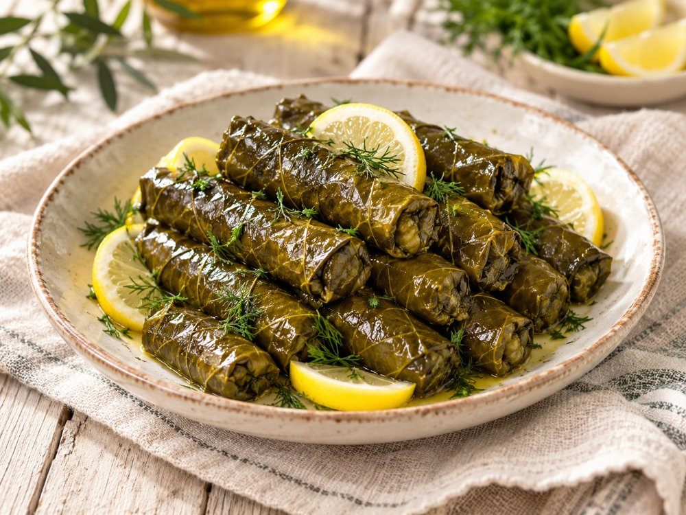
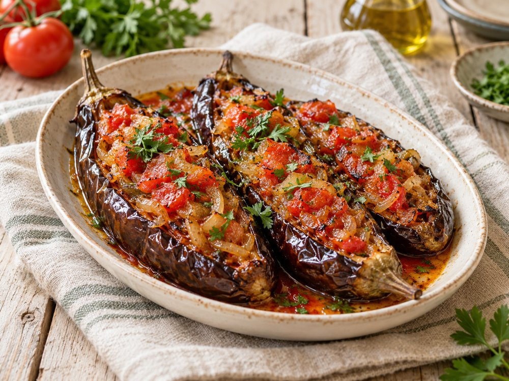

Zeytinyağlılar
İmam Bayıldı
Zeytinyağlı, bol soğanlı ve domatesli patlıcan klasiği.
◷ 60 dk
🍽 4 kişilik
✦ Orta
Malzemeler
Su bardağı 200 ml · Çay bardağı 100 ml
Yapılışı
1
Patlıcanları alacalı soy. Ortalarını boyuna yar; tuzlu suda 20 dakika bekletip iyice kurula.
2
Zeytinyağının yarısıyla patlıcanları tavada çevirerek yumuşat; kenara al.
3
Kalan yağda ince doğranmış soğan ve sarımsağı 5–6 dakika sotele. Küp domates, tuz ve şekeri ekleyip 5 dakika pişir.
4
Patlıcanların yarıklarını açıp domatesli harçla doldur.
5
Tencereye diz; yarım su bardağı sıcak su ekle. Kapağı kapalı, kısık ateşte yaklaşık 25–30 dakika pişir.
6
Maydanoz ekle; oda sıcaklığına gelince servis et.
💡 Püf Noktası
Dinlenince lezzeti daha da oturur.
♡ Anne Notu
Zeytinyağlı yemekler ertesi gün ayrı güzel olur.
Tarifle ilgili kısa cevaplar
İmam Bayıldı kaç kişilik?
4 kişilik olarak hazırlanır. Malzemeler bu miktara göre listelenmiştir.
İmam Bayıldı ne kadar sürer?
Tarifte belirtilen yaklaşık süre 60 dk. Süre, hazırlık hızına ve kullanılan ekipmana göre değişebilir.
İmam Bayıldı için püf noktası nedir?
Dinlenince lezzeti daha da oturur.
Görsel yapay zekâ ile oluşturulmuş bir sunum örneğidir. Kendi yemeğinizin görünümü farklı olabilir.